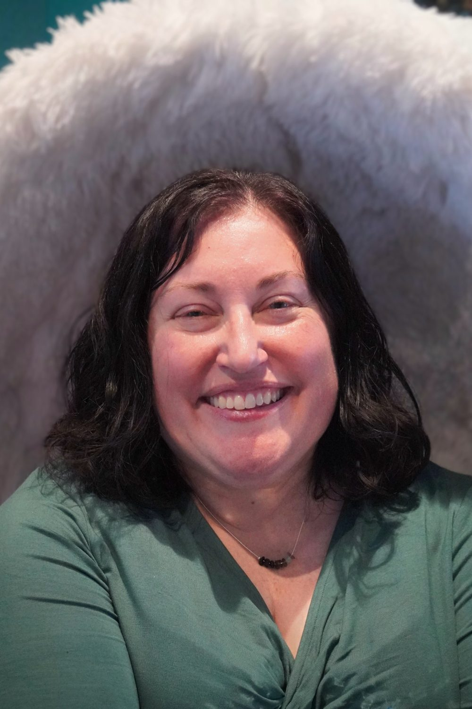

Anne Pidek, LMSW
“I strive to create a safe space for healing and empowerment for whoever seeks therapy.”
Anne's passion is working with people who are LGBTQ+, including letters for gender-affirming care, people who are neurodivergent, and people who have lived through trauma. She believes therapy doesn't have to be a negative or frightening experience.
She has drawn from several treatment methods to build a style of her own: conversational, client-led, and grounded in what you already do well. Over more than twenty years she has worked with the LGBTQIA2S+ community, neurodivergent people, adolescents, adults, elders, people with intellectual disabilities, and trauma survivors across a range of settings.
The Difference Counseling Services is her private practice in Grand Blanc, offering individual counseling for adolescents and adults, plus clinical supervision for LLMSWs.